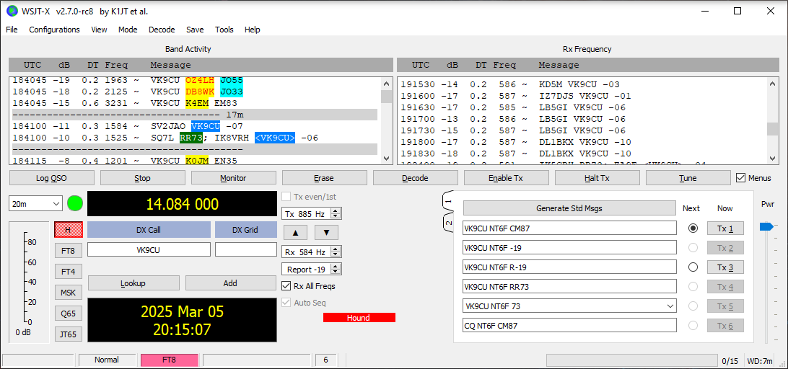

[Date Prev][Date Next][Thread Prev][Thread Next][Date Index][Thread Index]
Re: [NCDXC Chat] DX SPOT: VK9CU, FT8, F/H, 17M (18.096 MHz), 18:59Z [Cocos (Keeling) Is.]
A little more explanation. I probably overcomplicated my original spot by trying to explain why, if interested in working them, one should tune up 1 KHz from their advertised frequency.
They state they'll "either use normal F/H wsjtx, or SuperFox-wsjtx" on their website for FT8. I was receiving 2 discreet transmissions from them, so this has to be normal F/H (or normal FT8), not SF. But their transmissions were at 1525 and 1584 Hz when I tuned to their advertised frequency of 18.095 MHz., which is inconsistent with F/H (either normal or SF). So I tuned up 1 KHz and worked them at 18.096 (receiving them at 525 and 584 Hz). The image below shows the initial decodes when turned to 18.095 MHz.
Brian NT6F
On Wednesday, March 5, 2025 at 11:54:01 AM PST, brian davis via Chat <chat@ncdxc.org> wrote:
They're not using SF at this time.
Brian
On Wednesday, March 5, 2025 at 11:51:44 AM PST, Rick Bates, nk7i via Chat <chat@ncdxc.org> wrote:
Brian,
On the audio display of WSJT-X:
In SuperFox mode; you'll see a marker ~750 Hz. on the audio waterfall. You want the left side of the SF pattern at that point. There is a near constant tone which can be used to align that. {SF signals are fragile, proper tuning is important; so is copying the ENTIRE packet clearly.}
Of course you MUST be in SF mode (click on H for Hound, then right click the H to switch back/forth into SuperHound) if the DX is using SF mode; normal F/H won't decode it.
In THIS case, they were apparently in F/H (using MSHV, which now does SF too). I'm not chasing them, already have plenty of slots filled.
If their tones were ~1500, move your VFO up one KHz, making them ~500 to you. (They were apparently on 19.086 today; the posted freqs are usually plus/minus local noises.)
IF they are using MSHV (likely if a EU team), you can also call BELOW their tones (no more than 200 Hz lower or their low cut audio filter steps in); which is less 'busy' in the pileup and you may be heard faster.
GL,
Rick nk7i
On 3/5/2025 11:06 AM, brian davis via Chat wrote:
Their website (Operating Frequencies page) says they'll operate on 18.095 F/H or Super Fox. Livestream shows 18.095 as well. But I'm receiving them at 15xx Hz when turned to 18.095 (and F/H won't recognize Tx from H at those audio frequencies). I worked them in F/H mode at 18.096. Two to three streams at about -18 into my dipole in Saratoga.
Brian NT6F
_______________________________________________
Chat mailing list
Chat@ncdxc.org
http://mail.ncdxc.org/mailman/listinfo/chat_ncdxc.org
_______________________________________________
Chat mailing list
Chat@ncdxc.org
http://mail.ncdxc.org/mailman/listinfo/chat_ncdxc.org
_______________________________________________
Chat mailing list
Chat@ncdxc.org
http://mail.ncdxc.org/mailman/listinfo/chat_ncdxc.org

- References:
- [NCDXC Chat] SPOT: VK9CU, FT8, Fox and Hound mode, 10.133, Cocos (Keeling) Is.
- From: "Dave (NK7Z)" <dave@nk7z.net>
- [NCDXC Chat] DX SPOT: VK9CU, FT8, F/H, 17M (18.096 MHz), 18:59Z [Cocos (Keeling) Is.]
- From: brian davis <formula292@sbcglobal.net>
- Re: [NCDXC Chat] DX SPOT: VK9CU, FT8, F/H, 17M (18.096 MHz), 18:59Z [Cocos (Keeling) Is.]
- From: "Rick Bates, nk7i" <rick.nk7i@gmail.com>
- Re: [NCDXC Chat] DX SPOT: VK9CU, FT8, F/H, 17M (18.096 MHz), 18:59Z [Cocos (Keeling) Is.]
- From: brian davis <formula292@sbcglobal.net>
{kind=link}